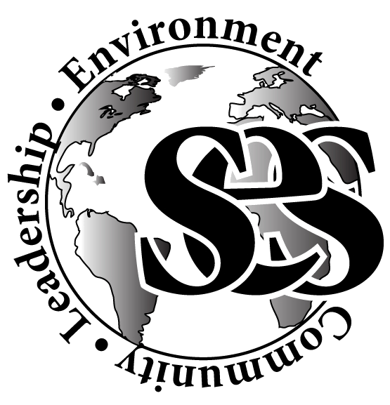

Jack Hunter & Many Organizations to be Listed at Another Point in Time
Credits
Some people did some things
Table of Contents
Statement of Purpose
My original plan was to try to create some sort of speech that I would give at schools to encourage environmental awareness. I ended up instead taking hold of 2016 graduate David Ortega's senior project because it sounded like it encompassed what I wanted to achieve - increased community involvement in environmental volunteer work - in a much more tangible and organized way than what I had planned to do. And, with that, I give you my statement of purpose:
Time Log
I timed a bunch of things.
Contacts & Connections
☃ Zaffke, Garrett, Lacey@handsontwincities.org, info@stlouispark.org, info@parkconnection.com, standaniel@comcast.net, member@tnc.org, volunteers@minneapolisparks.org, info@mepartnership.org, wei@w-e-i.org, north.star.chapter@sierraclub.org, info@longlakecc.org, ☃ kmccann@greatrivergreening.org, info@climategen.org, info@peopleservingpeople.org, arobbins@environmental-initiative.org, info@minnesotanonprofits.org, jessica.brokaw@ci.stpaul.mn.us, TGehring@ststephensmpls.org, pwoitock@hungersolutions.org, CLC.WWF.Coordinator@gmail.com, janiece@mnnoc.org, Liepold, Paula, info@artistrymn.org, volunteer@dakotawoodlands.org, mahyar@mpirg.org, akilgore@fmr.org, elsa.litecky@gmail.com, BWagner@fmsc.org, bailey@conservationcorps.org, ddonovan@2harvest.org, mlapointe@cesmn.org, info@friends-bwca.org, ☃ hollyc.jenkins@gmail.com
This link will create a new email to be sent to the whole list of organizations.
Narrative
I did a whole ton of things.
Personal Reflections
I learned a whole hecka lot.
Appendix
Not just a useless organ???!1